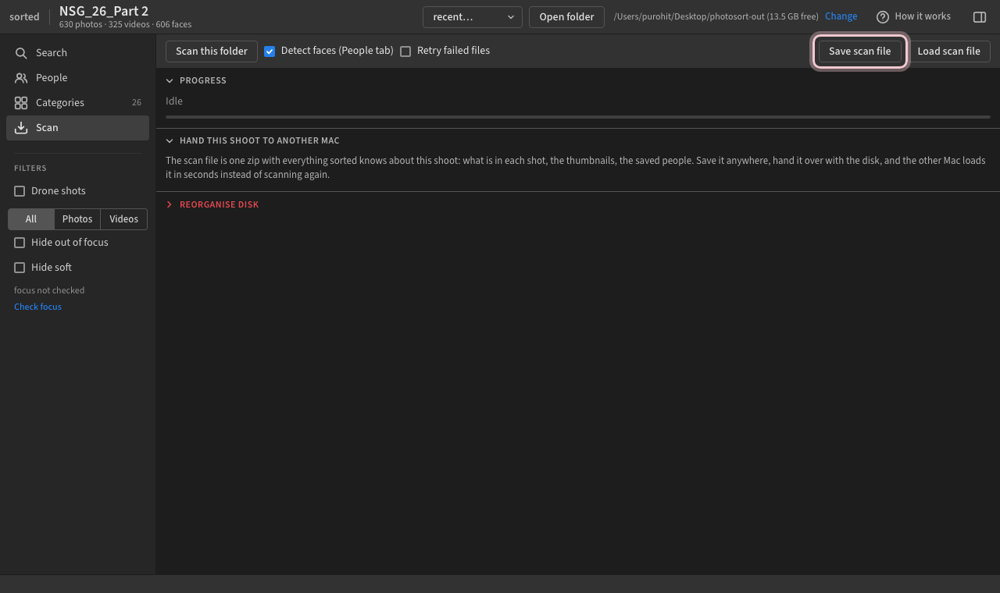

Share a scan with an editor.
A scan file holds everything sorted learned about a shoot: thumbnails, video frames, search, faces, people names, your Same or Different answers. It does not hold the photos and clips. So the editor gets two things: the scan file and the disk.
On your Mac
Open the shoot
It is under Recent on the welcome screen.
Left sidebar Scan, then Save scan file
A Mac dialog asks where. Best place: a sorted folder on the shoot disk itself, so the file travels with the footage. It writes <shoot name>.photosort-index.zip, usually a few hundred MB, about 1 GB for a shoot with many clips. Show in Finder points at it.

Older build showing Export index instead? Same thing; it saves into Desktop, photosort-out. Re-run the install line to get the current build.
Hand over the disk and the file
Or a copy of the shoot folder plus the zip on Drive. The zip alone lets someone browse and search; cutting needs the footage.
On the editor's Mac
Install sorted
One line in Terminal, on the download page. A few minutes.
Plug in the disk, open sorted, Load a scan file
Pick the zip. When it asks for the photo folder, point at the shoot on the disk. Seconds, no rescan. Names, people and categories arrive with it.
Work
Search, people, categories, export selects, Reorganise with Undo, straight to Drive. All on the originals.